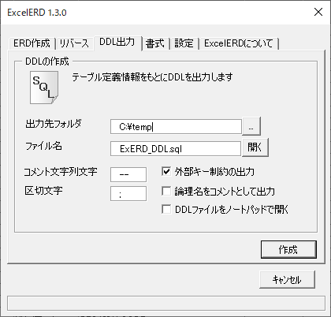
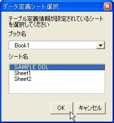

ExcelERD |
テーブル定義シートに基づいてER図を作成します。リバースエンジニアリングを行うには、こちらを参照してください。
「DDL出力」タブを開き、出力先フォルダ、ファイル名を設定し、作成ボタンを押します。
「DDLファイルをノートパッドで開く」にチェックを入れると、Windows標準のノートパットで作成したDDLファイルが自動で開きます。
チェックを外すと、OSに関連づけられたエディタで開きます。

データベース定義シートを選択します。
